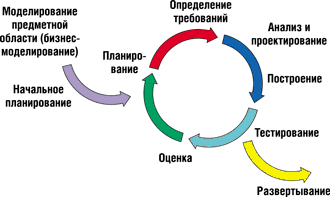
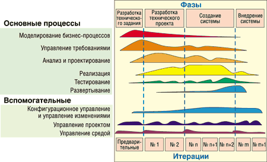
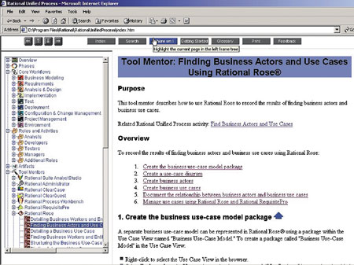
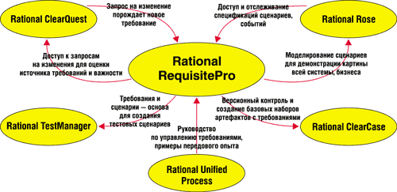
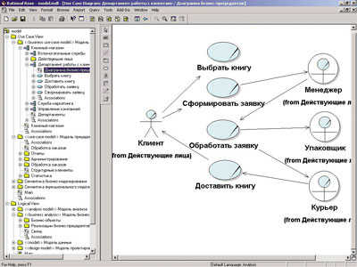
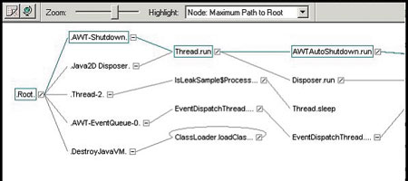
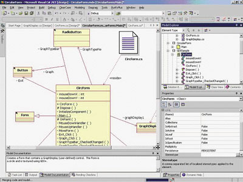

Андрей Колесов
При подготовке данного обзора использовались материалы корпорации IBM и компании "Аплана" (группа компаний "АйТи").
Давно прошли времена, когда основной инструментарий программиста состоял из компилятора с языков высокого уровня и простейшего редактора текстов. В середине 80-х на смену им пришли интегрированные средства разработки ПО, которые уже в то время пополнялись визуальными технологиями. Именно тогда начал использоваться термин "быстрая разработка приложений" (Rapid Application Development, RAD).
Однако еще на начальном этапе формирования промышленных технологий для реализации крупных программных комплексов было ясно, что процесс создания ПО не ограничивается только составлением алгоритмов обработки и их кодированием на одном из языков. Напротив, он состоит из череды взаимосвязанных этапов: формирование требований, проектирование, кодирование, тестирование, отладка, сопровождение, которые сегодня объединяются понятием "управление жизненным циклом приложений" (Application Lifecycle Management, ALM).
Другое дело, что до сравнительно недавнего времени основные усилия, направленные на автоматизацию задач разработки ПО, были связаны с созданием инструментария для собственно программирования как наиболее трудоемкого этапа. Но ситуация начала существенно меняться еще лет двадцать назад, и это было связано с быстрым ростом сложности программных проектов. При этом гораздо более актуальной стала задача расширения функциональности средств разработки (в широком понимании этого термина) в двух направлениях: автоматизация остальных этапов жизненного цикла ПО и интеграция всех инструментов между собой.
Rational Software на рынке средств разработки
Компания Rational Software (http://www.rational.com) с самого начала занималась созданием средств разработки программных систем корпоративного уровня и именно поэтому ориентировалась на выпуск комплексных решений класса ALM. В ее арсенале продуктов фактически не было представлено только одно направление - обычные средства собственно написания кода с соответствующими компиляторами. (Заметим, что ранее у компании не было и средств управления проектами, но они все же рассчитаны на более общий круг задач. Сейчас Rational развивает это направление за счет как создания собственных инструментов, так и интеграции со средствами других поставщиков, в первую очередь Microsoft Project.) Точнее, Rational сразу сделала основную ставку на создание программных проектов средствами высокоуровневого моделирования, не вмешиваясь в борьбу многочисленной группы поставщиков традиционного инструментария для программистов (правда, сейчас эта группа не столь многочисленна, как 10-20 лет назад).
По состоянию на 2002 г. Rational была безусловным лидером в области комплексных средств разработки класса ALM, хотя конкурирующие инструменты от других поставщиков для отдельных этапов процесса создания ПО были и есть*. Фактически единственным реальным соперником Rational пару лет назад публично объявила себя корпорация Borland (http://www.borland.com), обозначив для себя как стратегическое направление создания собственной ALM-платформы (см. "ALM-платформа Borland", "BYTE/Россия" No 7'2003).
* Применительно к этому сегменту рынка довольно часто используется термин OOA&D (object-oriented analysis and design). Но все же он относится только к одному сегменту ALM-средств, а именно к инструментам проектирования ПО с использованием механизмов высокоуровневого объектного моделирования.
История Rational SoftwareКомпания Rational Software была основана Полом Леви (Paul Levy) и Майком Девлином (Mike Devlin) в 1981 г. Сформулированная тогда ее миссия остается неизменной до сих пор: обеспечение успеха клиентов, разрабатывающих и развивающих программное обеспечение. Первый продукт Rational появился на рынке в конце 1984 г. В феврале 2003 г. корпорация IBM купила Rational за 2,1 млрд долл. (стоимость акций). К тому моменту Rational Software была одной из крупнейших софтверных компаний мира и самым большим специализированным поставщиком средств разработки (возможно, по категории "инструменты разработки" она уступала только Microsoft). По итогам ее последнего финансового года (закончился 31.03.2002) доход компании составил 689 млн долл. На момент вхождения Rational в IBM в ней работало примерно 3400 сотрудников, действовали 80 офисов по всему миру, продуктами компании пользовались более 600 тыс. разработчиков. Rational Software вошла в состав IBM Software Group (объем продаж в 2002 г. 13 млрд долл.) в качестве пятого софтверного брэнда, в дополнение к направлениям WebSphere, DB2, Lotus и Tivoli. Ее продукты теперь распространяются под торговой маркой IBM Rational. Бывший руководитель Rational Майк Девлин стал генеральным менеджером нового подразделения IBM.
|
Мы не ставим себе сейчас задачей провести сравнительный анализ инструментов разных производителей, но все же стоит сделать несколько замечаний по этому поводу. Borland исторически имеет сильные позиции как раз в области традиционных средств разработки приложений (Delphi, JBuilder и т. п.) - они фактически и составляют основу ALM-комплекса корпорации, расширение которого шло путем приобретения других компаний с соответствующими продуктами. Здесь кроется принципиальное отличие от бизнес-модели Rational, что дает потенциальные возможности для конкуренции. Правда, не нужно забывать, что по объемам продаж Borland более чем в два раза уступает Rational и в последние годы испытывает перманентные финансовые трудности**.
** После вхождения Rational в состав IBM компания Borland делает особый акцент на то, что она осталась единственным независимым поставщиком комплексной ALM-платформы (т. е. Borland не занимается продвижением собственных ОС, языков и т. п.). Конкуренты, в свою очередь, отмечают, что Borland пока не сформулировала четкую методологию ALM, которая должна объединить имеющиеся у нее инструменты.
Наверное, стоит упомянуть еще об одном важном игроке на поле средств разработки - Microsoft (http://www.microsoft.com). Пока корпорация не замахивается на создание собственной ALM-платформы, о продвижении в этом направлении говорится только в рамках сотрудничества с другими поставщиками, теми же Rational и Borland (эти компании стали первыми участниками программы Visual Studio Industry Partner). В то же время ее ключевое средство разработки Visual Studio.NET постоянно функционально расширяется в сторону использования высокоуровневых средств моделирования и средств управления проектами, в том числе за счет интеграции с Microsoft Visio и Microsoft Project.
Стабильность ситуации на рынке комплексных платформ разработки ПО была несколько нарушена год назад, когда Rational вошла в состав IBM (http://www.ibm.com). В целом было понятно, что никаких резких изменений в деятельности Rational ожидать не следует. Это определялось традиционно осторожной и неторопливой стратегией IBM в плане интеграции с поглощаемыми ею компаниями (она хорошо была видна ранее на примере Lotus и Tivoli). Однако развитие ситуации в долгосрочной перспективе было не столь очевидным, если учесть, что IBM делает основную ставку на развитие архитектуры J2EE, а Rational традиционно придерживалась принципов платформенной независимости.
Сейчас, по прошествии года деятельности Rational в составе IBM, можно сделать некоторые промежуточные оценки ситуации. Никаких принципиальных изменений в функциональном составе продуктов Rational, которые теперь называются IBM Rational, не произошло. Появление новых инструментов Rapid Developer и XDE Tester и модернизированных вариантов XDE Developer и Rational Unified Process в целом полностью вписывается в традиционную стратегию Rational. В то же время стоит отметить более гибкие схемы продажи продуктов (отдельными инструментами, а не крупными наборами).
Rational Unified Process - методология и продукт
Для многих ИТ-специалистов технологии Rational ассоциируются с известным инструментом визуального моделирования и проектирования Rational Rose и с использованием универсального языка моделирования UML (Unified Modeling Language). Однако на самом деле фундамент всего комплекса инструментальных средств компании - это методология Rational Unified Process (RUP), которая охватывает все процессы жизненного цикла создания ПО: управление проектами, бизнес-моделирование, управление требованиями, анализ и проектирование, тестирование, контроль изменений, а также конфигурационное управление.
В основе RUP лежат широкое использование современных инженерных СASE-технологий и пошаговый подход, определяющий ключевые параметры каждого этапа жизненного цикла:
- состав и последовательность работ, правила их выполнения;
- распределение обязанностей между участниками проекта;
- состав и шаблоны получаемых промежуточных и итоговых документов;
- порядок контроля и проверки качества;
- инструкции по использованию соответствующих инструментальных средств.
Легко заметить, что RUP в целом гармонично вписывается в идеологию современных систем управления качеством, определяемую международными стандартами CMM/CMMI и ISO, а также российским ГОСТ Р ИСО/МЭК 12207.
Схема создания ПО чаще всего складывается из сугубо последовательного выполнения отдельных этапов. Часто такую модель называют "классической", но это определение представляется неверным. На самом деле еще на заре создания промышленных методологий разработки ПО "классики" подчеркивали итеративный характер этого процесса и условность его представления в виде жесткой последовательности (рис. 1).
|  | Рис. 1. Создание сложных программных проектов носит итеративный характер.
|
RUP для реализации сколько-нибудь сложных проектов изначально базируется на итеративном процессе разработки (рис. 2). Такой подход обеспечивает необходимую гибкость, позволяя изменять требования в ходе проекта или корректировать деловые цели, а также акцентировать внимание на раннем выявлении и разрешении различных рисков.
|  |
| Рис. 2. RUP организует выполнение проекта по фазам, каждая из которых состоит из одной или нескольких итераций.
|
Следует также отметить еще несколько важных характеристик RUP, среди которых:
- эффективное управление требованиями и изменениями;
- поддержка объектно-ориентированных технологий;
- возможность физического воплощения визуальных моделей;
- ведение разработки с учетом выявленных прецедентов, определяющих функционал системы;
- поддержка компонентно-ориентированного подхода с использованием различных стандартов (CORBA, COM/DCOM, .NET, EJB и т. д.);
- возможность адаптации;
- обеспечение управления качеством;
- поддержка методологии инструментальными средствами.
Физически RUP представлен коробочным программным продуктом (компакт-диски) со структурированным электронным руководством в виде Web-сайта, содержащего инструкции, шаблоны и примеры для большинства критических задач, которые могут возникнуть в ходе проекта (рис. 3). RUP можно настроить в соответствии с особенностями и требованиями конкретной организации-разработчика. Незначительные изменения инженеры-технологи предприятия могут проделать самостоятельно с помощью самого RUP. Для более существенной адаптации следует использовать Rational Engineering Process (REP) - инструмент настройки и публикации методологических Web-сайтов на основе RUP, предназначенный как раз для тех, кому необходимо внести значительные изменения в RUP (ранее назывался Process Workbanch).
|  |
| Рис. 3. RUP реализован в виде структурированного Web-сайта.
|
Важное средство информационно-технической поддержки разработчиков - Web-портал Rational Developer Network, доступный через обычный Интернет (http://www.rational.net). Эта среда дает пользователям возможность обучаться и распространять накопленные знания в сообществе разработчиков, применяющих средства Rational. Однако пользоваться этим ресурсом могут только те, кто легально работает с какими-либо продуктами Rational (требуется авторизация).
Отдельно нужно сказать о внедрении RUP в организациях. Здесь видятся два разных подхода: сразу весь целиком или по шагам. Наиболее эффективно внедрять весь процесс целиком, если начинается новый проект, участники проекта хорошо владеют методологией RUP или некоторый проект ведется настолько хаотично, что любая его организация будет заведомым благом. Выбрать внедрение RUP по шагам лучше всего, если он внедряется в уже существующий проект, в котором есть налаженные механизмы командного взаимодействия, или если участники проекта плохо знакомы с RUP. Иногда полезно внедрить только часть RUP в одном или нескольких департаментах организации.
Но в любом случае надо помнить, что в различных организациях целесообразно находить свои эффективные пути внедрения новых методов работы! Здесь иногда бывает дешевле и проще обратиться за помощью в специальные консалтинговые организации, имеющие многосторонний опыт внедрения RUP и работы по указанной методологии.
Инструментарий Rational
Инструментарий Rational - это довольно обширный список различных программных средств. Разобраться в нем непосвященному не так-то просто. Проблема усугубляется еще и тем, что многие приложения представлены в нескольких вариантах (для разных языков и платформ), а поставляются они в виде пакетов, состоящих из нескольких продуктов. Более детальную и актуальную (регулярно обновляемую) информацию можно найти по адресу http://rational.aplana.ru. В этом обзоре мы рассмотрим только ключевые продукты Rational.
С точки зрения методологии RUP продукты Rational можно представить следующей структурой (см. таблицу), включающей четыре основные группы инструментов:
- объединяющая платформа;
- анализ и проектирование;
- разработка ПО;
- тестирование.
Прежде чем перейти к описанию продуктов, следует сделать несколько замечаний. Во-первых, схема распределения инструментов по группам, приведенная в таблице, несколько отличается от той, что в течение нескольких последних лет присутствовала в документах Rational. Дело в том, что раньше структура была привязана к вариантам поставки продуктов, которые сейчас несколько изменились. Деление по группам достаточно условно: например, средства моделирования и анализа работы приложений широко применяются и на этапе разработки ПО.
Во-вторых, "объединяющая платформа" - это не синоним Team Unifying Platform (комплекта поставки, включающего более широкий спектр инструментов, в частности для тестирования).
В-третьих, в таблице не представлены некоторые специальные средства разработки, в частности, для языка Ada и для создания систем, функционирующих в режиме реального времени.
Отдельно нужно сказать об отдельной группе продуктов XDE (eXtended Development Experience), которая сегодня представлена тремя основными инструментами - Modeler, Developer, Tester. Фактически это новое поколение решений Rational, одна из ключевых характеристик которого - изначальная нацеленность на совместное применение с другими ведущими инструментальными средствами, такими, как IBM WebSphere Studio, Eclipse и Visual Studio .NET.
Структура ключевых продуктов IBM Rational
| Объединяющая платформа | ||
| IBM Rational Unified Process - общие процессы IBM Rational RequisitePro - управление требованиями IBM Rational ClearQuest - управление изменениями IBM Rational ClearCase - конфигурационное управление IBM Rational SoDA - автоматизация документирования IBM Rational TestManager - управление тестированием IBM Rational Project Console - мониторинг ключевых показателей проекта |
||
| Анализ и проектирование | Проектирование и разработка ПО | Тестирование |
| IBM Rational Rose -бизнес-моделирование, анализ требований,
моделирование данных IBM Rational XDE Modeler - средство визуального моделирования |
IBM Rational XDE Developer for .NET - разработка для Microsoft
.NET IBM Rational XDE Developer for Java - разработка для J2EE IBM Rational Rapid Developer - интегрированное средство быстрой разработки J2EE-приложений |
IBM Rational PurifyPlus (Purify, PureCoverage, Quantify) -
анализ работы системы в режиме исполнения IBM Rational Robot - функциональное и нагрузочное тестирование IBM Rational TestFactory - автоматизация создания тестов IBM Rational XDE Tester - функциональное тестирование Java- и Web-приложений |
Объединяющая платформа
В эту группу входят инструментальные средства IBM Rational, которые требуются любому участнику проекта независимо от специфики его деятельности. С их помощью также организуется эффективное взаимодействие всех исполнителей.
Управление требованиями. IBM Rational RequisitePro - решение для управления требованиями, которое позволяет всем членам команды принимать участие в их формировании, а также гарантирует, что каждый сотрудник будет иметь доступ к единому представлению требований. В качестве пользовательского интерфейса может использоваться как стандартный Windows GUI, так и Rational RequisitePro. В последнем случае доступ получат специалисты, работающие в удаленном режиме или на различных платформах. С помощью этого инструмента поддерживаются и виртуальные дискуссии, в том числе с доступом по электронной почте, так что в них могут принимать участие, например, представители заказчика, у которых нет RequisitePro.
Для работы с документами применяется привычный интерфейс Microsoft Word, сами документы хранятся в базе данных (можно использовать СУБД различных поставщиков). Для улучшения коммуникаций и повторного использования формулировок требований RequisitePro интегрирован с другими продуктами Rational (рис. 4).
|  |
| Рис. 4. RequisitePro интегрирован с другими продуктами Rational.
|
Управление изменениями. IBM Rational ClearQuest - система отслеживания и регистрации дефектов, а также всех типов запросов на изменения для проекта любого типа. СУБД SQL Anywhere и Microsoft Access включены в поставку, а для более крупных проектов ClearQuest обеспечивает легкую интеграцию с Microsoft SQL Server и Oracle. Благодаря непосредственной поддержке Windows, Unix, Web, а также электронной почты ClearQuest гарантирует, что все члены команды, включая тестировщиков и других заинтересованных лиц, будут вовлечены в процесс отслеживания дефектов и запросов на изменения на протяжении всего цикла разработки.
ClearQuest предоставляет полностью документированный API на основе COM, что позволяет интегрировать его с центром обработки телефонных звонков, администрацией, тестированием ПО и с другими инструментами сторонних разработчиков.
Конфигурационное управление. IBM Rational ClearCase помогает команде структурировать и контролировать все проектные материалы, которые создаются и изменяются в процессе разработки, - от требований и проектных моделей до исходного кода и Web-контента, запросов на изменения и текстовых сценариев. Имея возможность масштабироваться от небольших групп до команд уровня предприятия, продукт обеспечивает все необходимые функции конфигурационного управления - контроль версий, управление рабочим пространством, сборкой проектов и т. д.
Механизм просмотра View обеспечивает доступ к той информации, которая необходима для выполнения конкретной задачи. С его помощью доступ к функциям конфигурационного управления можно получить из сред разработки различных поставщиков. Имеются специальные версии IBM Rational ClearCase, в частности, LT для небольших рабочих групп и MultiSite для географически распределенных команд.
Автоматизация документирования. IBM Rational SoDA, базируясь на шаблонах, поддерживает стандартизацию типов документов в рамках проекта или компании в целом. Для создания шаблонов используется интуитивно понятный графический интерфейс, подобный WYSIWYG-редактору. В поставку входит большой комплект готовых шаблонов. Для подготовки документов используются популярные текстовые редакторы: Microsoft Word и Adobe FrameMaker+SGML. Реализована возможность генерации документов и отчетов в формате HTML.
Управление тестированием. IBM Rational TestManager обеспечивает работу коллектива на всех этапах тестирования, предоставляя команде общие средства планирования, проектирования, исполнения и анализа тестов с единой панелью управления. Продукт использует собственное хранилище данных, что улучшает контроль версий. Любой инструмент тестирования ПО, имеющий собственный API, может быть интегрирован в единую систему, причем поддерживается большинство исполняющих платформ тестирования.
Управление проектами. Rational Project Console (новое средство) - система автоматического отслеживания хода проекта, сбора его ключевых метрик и генерирования сайта для участников проекта разработки ПО со статистической информацией о проекте. Позволяет команде разработчиков, аналитиков и руководителей отслеживать состояние всех проектных действий и выводить их на экран в читаемом виде. RPC оформлен в виде Web-страницы, размещаемой на сервере, благодаря чему можно отслеживать статус проектных документов как из внутренней сети компании, так и из Интернета (что особенно важно для региональных территориально удаленных команд).
Анализ и проектирование
Визуальное моделирование. IBM Rational Rose - общепризнанный мировой лидер среди средств визуального моделирования (рис. 5) и стандарт де-факто в этом сегменте продуктов. Он основан на использовании UML - языка моделирования, решающий вклад в создание которого внесла именно Rational. Продукт предназначен прежде всего для моделирования бизнес-процессов и функционала системы, но с помощью специальных расширений позволяет решать и более широкий круг задач, в том числе проектирования баз данных, генерации программного кода для различных ОС (Unix/Linux, Windows), языков программирования и средств разработки. Rational Rose позволяет изменять код и модель одновременно и в любое время выполнять их синхронизацию. Все участники проекта - аналитики, специалисты по моделированию, разработчики - могут использовать эту систему не только для определения архитектуры, но и для стандартизованного обмена информацией.
|  |
| Рис. 5. IBM Rational Rose обеспечивает возможность визуализации, изменения и тестирования модели.
|
Визуальное проектирование. IBM Rational XDE Modeler (выпущен в 2003 г.) - это средство визуального проектирования нового поколения, специально для архитекторов и проектировщиков. Фактически это элемент инструментов XDE Developer, но без возможностей Round-Trip разработки, т. е. без работы с программным кодом в режиме исполнения.
Проектирование и разработка ПО
Фактически в данном разделе представлены продукты Rational нового поколения, которые должны прийти на смену классическому варианту Rose. Дело в том, что традиционные решения на базе Rationаl Rose позволяют проводить прямое и обратное проектирование кодов для многих языков программирования, т. е. возможна прямая генерация кода, обратная (так называемый реверс-инжиниринг) и постоянная модификация кода и модели с поддержанием их в актуальном состоянии (round-trip engineering). Однако применение этих инструментов ограничивалось тем, что они не допускали генерацию в реальном масштабе времени: код можно было получать, но при этом нужно было выполнить определенные дополнительные действия по встраиванию его в систему разработки. Кроме того, проблемы возникали и при постановке сгенерированных (перегенерированных) модулей под версионное управление.
Новый инструмент XDE Developer решает эти задачи, реализуя функцию поддержания кода и модели в актуальном состоянии при работе в реальном масштабе времени. Таким образом, нарисовав диаграмму классов с иерархической структурой, можно тут же сгенерировать код со всеми связями, атрибутами и методами. Принципиальное отличие XDE от Rose Professional заключается в том, что XDE работает со всеми типами диаграмм из UML 1.3. В то же время XDE Developer пока не покрывает полностью функциональность Rose, которая, в частности, предоставляет возможность работы с более широким кругом языков программирования, обладает более развернутыми функциями проектирования данных.
Разработка приложений для .NET и Java. IBM Rational XDE Developer (ранее назывался XDE Professional) - один из ключевых сегодня инструментов в линейке Rational и наиболее востребованный на рынке. Он предназначен для широкого круга разработчиков с целью создания как локальных приложений, так и систем масштаба предприятий. Продукт реализован в двух вариантах - для Microsoft .NET (VB.NET и C#) и для Java. В первом случае он подключается как дополнение к среде разработки Visual Studio.NET (рис. 6). Во втором случае он включает в себя встроенную оболочку Eclipse IDE и может интегрироваться с IBM WebSphere Studio Application Developer, а также работать совместно с другими Java-инструментами (например, Borland JBuilder). Существует также объединенный пакет XDE Developer Plus, в который входят предыдущие две конфигурации и пакет PurifyPlus для проведения Runtime-анализа приложений.
|  |
| Рис. 6. Среда Visual Studio.NET с интегрированным XDE DeveloperPlus.
|
В основе XDE Developer лежит подход Round-Trip, основная особенность которого - итеративное наращивание функционала разрабатываемой системы: доработки модели системы параллельно отражаются в коде, а изменения кода переносятся в модель. Фактически речь идет о методах визуального проектирования, реализованных в Rational Rose. Отметим также, что с помощью Rational Rose можно организовать разработку Round-Trip для приложений VB и С++ (Visual Studio 6.0).
Кроме того, в ближайшем будущем должна появиться версия XDE Developer C++ для создания приложений на C++ в среде Visual Studio.NET. В настоящее время она еще проходит бета-тестирование.
Быстрая разработка приложений для J2EE. IBM Rational Rapid Developer (выпущен в 2003 г.) - качественно новый инструмент в линейке Rational, он позволяет выполнять полный цикл разработки ПО на базе подхода Round-Trip, не прибегая к инструментам третьих фирм. В то же время его отличает высокий уровень интеграции с другими продуктами Rational и IBM. В частности, для отладки может использоваться соответствующее расширение от WebSphere Studio, для тестирования - XDE Tester. По мнению Rational, с помощью данного инструмента Java-приложения смогут писать программисты, знакомые пока лишь с другими языками программирования (VB, COBOL, 4GL, PowerBuilder и т. п.). Существует специальный модуль расширения RUP (Plug-In) для проектов, ведущихся с использованием Rapid Developer.
Если сравнивать этот продукт с Rational XDE Developer for Java (Eclipse), то в целом Rapid Developer более мощный инструмент, рассчитанный на создание "продвинутых" приложений. Создатели относят его к категории технологий структурированной быстрой разработки приложений.
Тестирование
Анализ работы системы во время исполнения. В IBM Rational PurifyPlus есть три инструмента, предназначенных для анализа в режиме реального времени приложений и компонентов, разработанных с помощью Visual C/C++, C#, VB, VB.NET, Java, Java.NET. Компонент Purify обеспечивает автоматическое выявление ошибок, связанных с памятью; при этом выделяется источник и расположение ошибки. Если доступен исходный код, то его можно исправить непосредственно из Purify. Запатентованная технология Object Code Insertion позволяет выявлять ошибки доступа к памяти не только в исходном коде, но и в двоичных программных компонентах (DLL, объекты COM/DCOM, ODBC). PureCoverage - средство автоматического определения непротестированнного кода. Quantify выполняет оценку производительности, определяя узкие места приложений и компонентов, как с исходным кодом, так и без него (рис. 7). Встроенные средства анализа данных позволяют сравнивать результаты тестовых прогонов для различных вариантов кода.
|  |
| Рис. 7. IBM Rational Quantify позволяет увидеть узкие места приложений в графическом представлении.
|
Функциональное и нагрузочное тестирование. IBM Rational Robot - средство создания, изменения и выполнения автоматизированных тестов Интернет-приложений, ERP-систем и клиент-серверных решений. Обеспечивается объектно-уровневая поддержка при создании приложений с помощью различных средств разработки. Сценарии функциональных тестов генерируются в среде SQABasic, синтаксически совместимой с VB, встроенный редактор позволяет расширить сценарии тестов за счет необходимых процедур и логических условий. Предусмотрена возможность создания специализированных тестов для разных типов программных объектов. Для формирования скриптов используется собственный С-подобный язык.
Автоматизация создания тестов. IBM Rational TestFactory - инструмент автоматической генерации скриптов тестирования посредством всестороннего анализа запущенного приложения, выявляющего дефекты надежности. Поскольку в программах возможны самые разные пути выполнения, проблема заключается в том, чтобы создать тесты, которые проверяют полный функционал приложения за минимальное число шагов.
Функциональное тестирование Java- и Web-приложений. IBM Rational XDE Tester (выпущен в 2003 г.) - специализированный инструмент для тестирования Java-приложений (J2EE, J2SE, SWT, AWT/JFC) и Web-приложений (HTML, DHTML, XML, JavaScript, апплеты Java). Текстовые сценарии пишутся на Java, технология ScriptAssure обеспечивает проверку достоверности динамических данных. Среда тестирования реализована в оболочке Eclipse, при этом возможно встраивание инструмента в WebSphere Studio и Rational XDE Developer.
Что изменилось за год
В заключение хотелось бы вернуться к вопросу о том, что же произошло с линейкой продуктов Rational за год ее пребывания в составе IBM.
В 2003 г. был выпущен обновленный вариант всего семейства IBM Rational 2003 - модернизации подверглись практически все продукты. Однако наибольшее развитие получили те из них, которые в 2003 г. стали продвигаться под маркой XDE. Ранее выпушенный продукт XDE Professional стал называться XDE Developer. Кроме того, были представлены два новых продукта - XDE Tester и XDE Modeler. Появился еще один качественно новый продукт - Rapid Developer. В то же время, кажется, из состава Rational исчезли инструменты для работы с содержимым Web-сайтов (тестирование контента).
Серьезно поменялась комплектация поставок, она стала более гибкой, компонентной. Ранее основные поставки выполнялись в виде больших пакетов Suite (AnalystStudio, TestStudio Suite, TeamTest и т. п.). Теперь у заказчиков есть возможность выбора нужных инструментов с более высоким уровнем дискретности. Но это создает и определенные трудности, так как сформировать оптимальный набор нужных средств не так-то просто. Здесь желательна помощь профессиональных консультантов, особенно для тех клиентов, кто только начинает осваивать технологии IBM Rational. Обращаем внимание читателя, что в обзоре мы говорили о функциональных продуктах, а не о комплектах поставок! Некоторые продукты вообще не продаются в автономном варианте, только в наборах.
И еще один важный момент - стоимость. Хороший инструмент не бывает дешевым, и инструменты IBM Rational достаточно дороги. Например, одна лицензия на Rapid Developer стоит 6 тыс. долл., а XDE Developer - 3 тыс. долл. Конечно, возникает вопрос: в какой степени применение XDE Developer for VS.NET сможет повысить эффективность разработчика, уже пользующегося Visual Studio.NET Enterprise (где имеются свои средства визуального моделирования) стоимостью около 1500 долл.? Конечно, эту проблему нужно обсуждать отдельно и более детально. Хотя в целом можно полагать, что инструментарий Rational весьма полезен, так как он пользуется большим спросом в среде специализированных ИТ-компаний и корпоративных клиентов.
Но следует иметь в виду главное: при всей важности инструментальных средств залогом успешности крупных программных проектов остается использование современных инженерных методологий. У IBM Rational такая методология имеется. С ее внедрения и нужно начинать повышение качества разработки ПО.
Стратегия развития Rational в составе IBMОтмечая первую годовщину работы в составе корпорации IBM, руководитель подразделения IBM Rational Майк Девлин (один из создателей Rational) в интервью новостному агентству InternetNews.com рассказал о стратегии развития данного направления. Основные тезисы этой беседы выглядят следующим образом. Развитие софтверных технологий IBM в целом определяется ориентацией на использование распределенной сервис-ориентированной архитектуры ПО (service-oriented architecture, SOA) на базе Web-служб. По оценкам независимых аналитиков, мировой рынок продуктов, реализованных на базе SOA, к 2010 г. достигнет 43 млрд долл. Соответственно ведущие поставщики средств разработки (Borland, Microsoft, Rational) также модернизируют свои инструменты в этом направлении. В течение последнего года Rational потратила 150 млн долл. на исследование и разработки в данной области. Rational будет двигаться в направлении интеграции с другими софтверными технологиями IBM, сначала с WebSphere, затем с Tivoli, а потом - с остальными. Речь идет в первую очередь об использовании методологии разработки Rational Unified Process. В любом случае средства Rational рассматриваются как дополнение к инструментам Eclipse и WebSphere Studio, а не как альтернатива им. Rational будет по-прежнему ориентироваться на поддержку различных платформ разработки, в том числе Microsoft Visual Studio.NET. "Наша инженерная команда продолжает работать в Редмонде, так что мы можем поддерживать тесное взаимодействие с Microsoft", - подчеркнул Майк Девлин. |